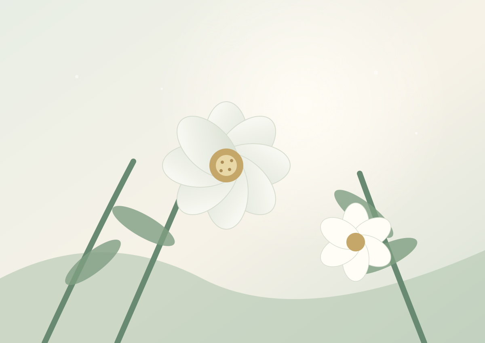
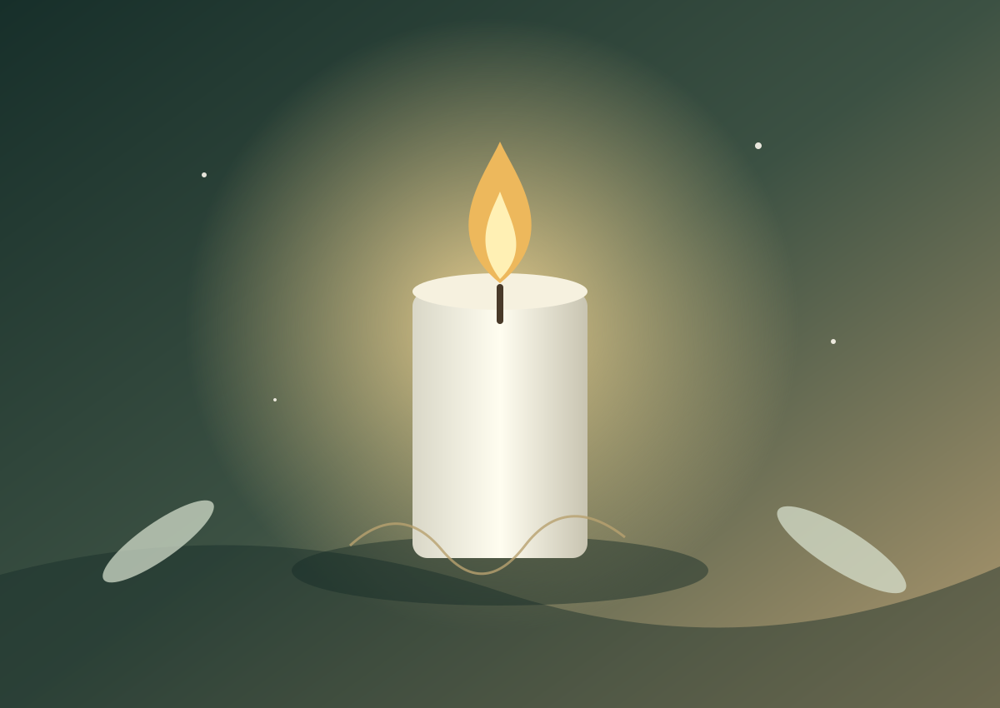

به یاد مهربانیهای بیپایان
زندگینامه، ویژگیهای اخلاقی و خاطرات خانواده.
یادمان دیجیتال، فضایی برای روایت زندگی، حفظ تصاویر و ثبت خاطرات عزیزان از دسترفته است.
شروع یک یادمان ←
نمونههای زیر الهامبخش طراحی یادماناند؛ محتوای واقعی هر یادمان باید با اجازه و اطلاعات خانواده ثبت شود.
زندگینامه، ویژگیهای اخلاقی و خاطرات خانواده.
گالری تصاویر و روایت لحظههای ماندگار.

نمونه طراحیپیامهای یادبود و دعاهای خانواده و دوستان.
در نسخه فعلی، فرم ساخت یادمان در صفحه نخست پیشنویس را روی همان مرورگر نگه میدارد.
ساخت پیشنویس یادمان ←